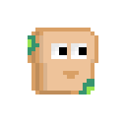
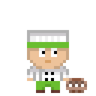
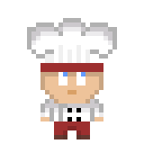

During my Advanced Game Design semester, in collaboration with my project group, we made the decision to establish our own hypothetical game studio named Studio 21. Our aim was to develop a tower defence game with a bakery theme, allowing players to actively participate in combat against enemies. This game is titled "Bread-Gone-Bad-TD."



During the first half of this semester, I significantly enhanced my Unity skills by working with scriptable objects and the new Unity input system. It was also my first time serving as the GIT master in a group. While I had some experience resolving merge conflicts, managing a large group on GIT presented new challenges. However, being the GIT master turned out to be enjoyable. Responsibilities like merging at the end of each sprint and managing the repository were not as daunting as I had anticipated. Effective communication was key to ensuring everyone understood which branch was which. Additionally, I acquired new skills in creating pixel art and animations, which were areas I was not previously familiar with. This project provided me with valuable learning opportunities.